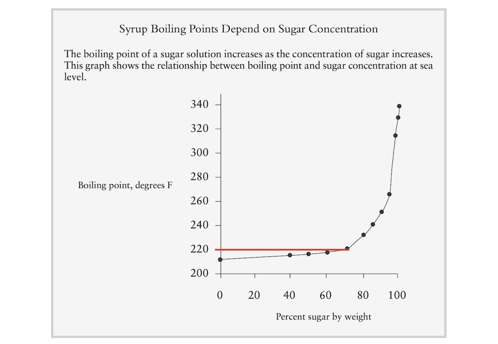
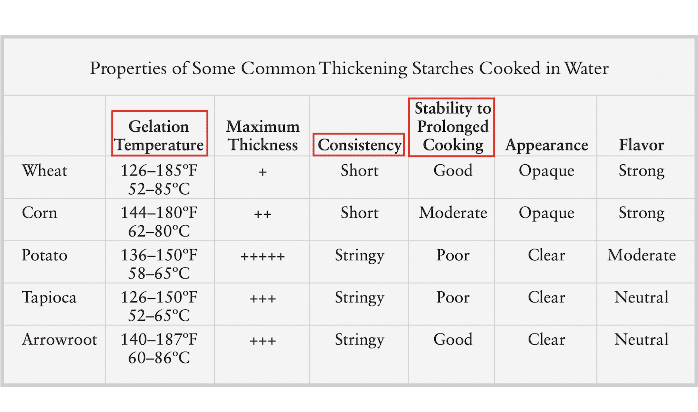
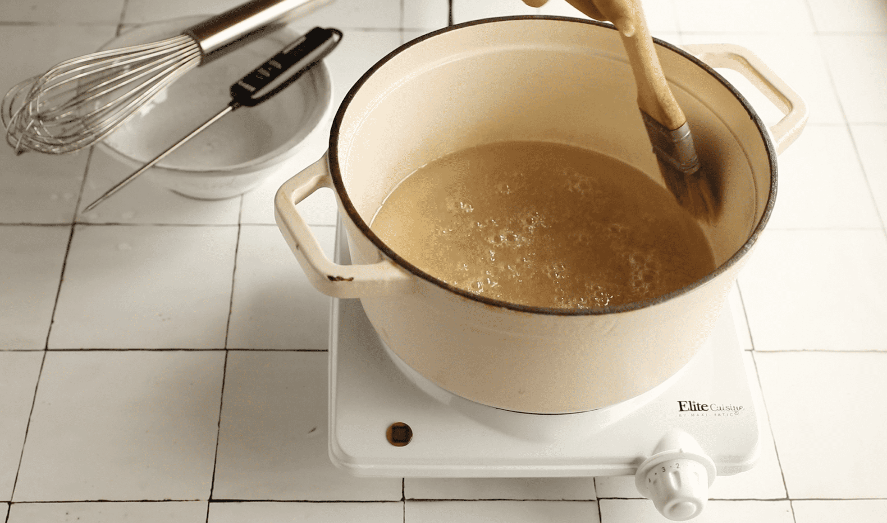
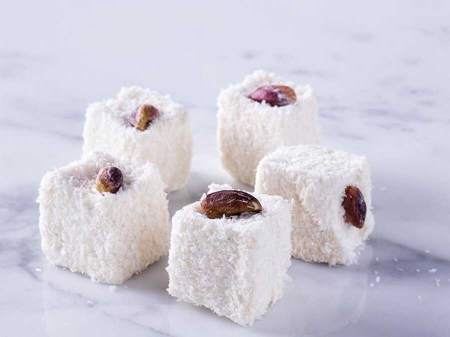

With the help of food science, this authentic Turkish delight recipe from Narnia is as close to foolproof as a confectionery recipe can get. Perfectly chewy and sweet, "lokum" is traditionally vegan & gluten-free. Read on to find out its fascinating history, as well as all the key tips and troubleshooting suggestions for Turkish delight. I've been trying to perfect this recipe for ages. The initial attempts were either too soft, too chewy, lumpy, or stretchy. I realized a while later that this was a common experience shared online across many Turkish delight recipe pages for a significant portion of confectionery enthusiasts like myself. After finally getting the recipe right consistently (took 13 trials of multiple batches), I'm confident in all the directions and tips shared below. If you decided to spend two hours and ingredients on a lokum recipe, taking an additional 10 minutes to read the details is a no-brainer to avoid likely headaches.
In particular, pay very close attention to directions on temperature, the addition of starch, and the judging of doneness at the final stage. You will find the following sections in this post:
We don’t know the definitive origin of Turkish delight. U.K. food historian Reay Tannahill suggests that the Persian confection "ahbisa" was the ancestor of today's lokum. Although it was likely an anonymous recipe born in the Middle East, perhaps Persia, in the 15th century, other sources allege it was invented in the late 18th century in Istanbul. It is claimed that the Sultan of the Ottoman Empire at the time, Abdülhamit I, craved a softer candy than what was available at his palace. A man of means, he summoned his confectioners and demanded a soft candy to satisfy his sweet tooth… and Turkish Delight was born. The name in Turkish, "lokum", comes from “rahat-ul hulküm” in Arabic, meaning “comfort for the throat". Sounds exactly like what the Sultan was looking for. Another leading theory is that an independent confectioner named Hacı Bekir Efendi invented lokum of his own volition around the same time in the 18th century. His candy store became quite famous in Istanbul, and Sultan Mahmud II made him Head Confectioner to the Ottoman Court. Later in that century when scientists invented the modern refined sugar and cornstarch, Bekir Effendi changed his original recipe. He replaced grape molasses or honey with refined sugar, and flour with cornstarch: the binding agent that gives Turkish delight the distinct chewiness it is known for today. Long story short, the most reasonable theory is that a candy very similar to lokum was invented anonymously sometime between the 14th and 16th centuries in the Middle East that used flour as the binding agent and molasses or honey as the sweetener. Then in the 18th century, an Ottoman confectioner in Istanbul named Hacı Bekir Efendi, he replaced the ingredients with modern ones and created what we call Turkish delight today.
Later on in the 19th century, lokum made its way to the West when travelers who loved this exotic candy in Istanbul brought cases of it back to Britain. Importation to England officially began in 1861, originally introducing it as “Lumps of Delight”. Thankfully, the name that ended up sticking was Turkish delight. When C.S. Lewis started writing the Lion, the Witch, and the Wardrobe, the world looked very different. Because of World War 2, confectionery items were rationed in Britain. By the time the book was finally published in 1950, the allowance was still half a pound of candy and chocolate per person per month—if you could afford it, of course. That’s why it makes so much sense that Edmund Pevensie’s wish from the White Witch is a candy that is made almost entirely of sugar. Something luxurious and out of reach at the time. Here is another fun fact on Lewis's fascination with Turkish culture: aslan directly translates into lion in Turkish!
Makes 40 ~1-inch cubes, approximately 10 servings.
FOR LOKUM:Turkish delight stores exceptionally well. I find that the best time to enjoy lokum is two days after preparing them. This gives it enough time for the delicate chewiness to develop. After the initial drying out, I recommend storing them in the refrigerator covered with all the leftover cornstarch & powdered sugar mix from dredging. Prior to serving, make sure to bring Turkish delights back to room temperature. A few caveats regarding storage:
It is highly likely that one or a combination of the four happened: i) the syrup wasn't brought to a high enough temperature at the beginning ii) the final mix was taken off the heat way too early when the water content was still too high iii) too much acid (citric acid, lemon juice, or cream of tartar) or too little starch was used accidentally iv) the mixture was whisked too vigorously after gelation and the starch molecules disintegrated as a result Unfortunately, there is no way to bring it back to the ideal texture especially if you're not sure what went wrong. To avoid wasting ingredients, you may use pectin to set the mixture at this point—but it won't really be a proper Turkish delight.
Do I need cream of tartar for authentic Turkish delight?If you have citric acid or lemons, no. Potassium bitartrate (cream of tartar) does the same thing that citric acid does for this recipe: preventing sugar crystallization.
How do I substitute citric acid with lemon juice in lokum?1 tablespoon of lemon juice roughly equals ¼ teaspoon of citric acid. However, this will depend on the lemon as each will have different proportions of acid. Additionally, note that, unlike citric acid, lemon juice will most likely impart some flavor to your Turkish delight.
How do you get rid of lumps in Turkish delight?In my experience, the step most susceptible to the formation of lumps is the combining of cornstarch with syrup, especially in recipes that instruct to heat the starch separately first. The below image shows what happens when the recipe fails at that step. This is completely avoidable by adding the cornstarch dissolved in water (ideally, shaken vigorously in a jar to prevent any clumps) gradually to your syrup. If you already have a lumpy mix of lokum sitting on the stove as you're reading this, then the answer depends on one thing: can you realistically pick out all the lumps one by one? If you have say, above 20 of such lumps, I'd say start over and you'll be glad you haven't wasted a further two hours on the project. If it is possible to pick them out, then do so and continue on.
To what temperature should you bring Turkish delight?Anywhere from 250°F to 260°F is ideal. The higher limit brings a chewier texture, while the lower will be slightly softer. The reason I recommend 250°F is because of how easy it is to overheat the mixture past the hard ball stage. There really is no going back from hard candy—but if you're experienced, feel free to go for 260°F directly.
Can I make Turkish delight without a thermometer?Technically, you could if you familiarize yourself with and are comfortable judging the steps of the recipe with the cold water test. However, once a syrup goes above 220°F, it gets considerably more difficult to control its temperature due to the lower percentage of water in the mix (see graph below from Harold McGee's "On Food and Cooking"). This means that you need to be extremely quick with the cold water test; otherwise, you're risking overheating to above 260°F and getting a hard candy without realizing it until you've spent 2-3 hours. I've been there, and it's no fun.
 Can I substitute the cornstarch with another starch for making Turkish delight?There is no perfect alternative. That’s because each type of starch is different and has its own distinctive proportions of starch molecule chains called amylose and amylopectin which result in different qualities, such as different gelation temperature ranges, consistency, or stability on prolonged heat. Potato starch, for example, has a large number of attached phosphate groups, causing the starch chains to repel each other. This means that it doesn’t congeal very well upon cooling, which is something we rely on heavily while making Turkish delight. All in all, from looking at the below chart from, you guessed it, Harold McGee's "On Food and Cooking", I would pick arrowroot starch as the best alternative if required.
 How do I make sure that syrup doesn't crystallize?The citric acid largely takes care of this issue, but to guarantee it further, you may brush down the sugar particles left on the sides of the pan with a wet pastry brush.
99.9% of the time, yes, authentic plain Turkish delight is vegan and does not contain any animal products. There are caveats, however: the sugar used in them may have been filtered through bone char since most sugar production facilities still use that process. Also, note that there are rare recipes on the web that use gelatin to set the dessert, but I personally wouldn't consider them as lokum. Additionally, some rare varieties contain clotted cream ("kaymak") sandwiched in lokum; these are supposed to be consumed within days of production and are almost impossible to find outside of Turkey. If you do find yourself in a Turkish candy store one day though, some varieties will look like they must absolutely have some dairy in them: they are fluffy, often white or light-colored, and are sometimes called "paşa" or "sultan" lokum. Usually, what they have isn't dairy but soapwort extract! This magical plant extract completely transforms Turkish delight. I can't wait to get my hands on it and experiment using soapwort in meringues—it may become the next aquafaba!
 Is Turkish delight gluten-free?99.9% of the time, yes, modern plain lokum is gluten-free. The authentic recipe that virtually all the manufacturers use only has the following simple ingredients: sugar, water, cornstarch, citric acid, and sometimes cream of tartar. However, before the invention of cornstarch in the 19th century, Ottoman confectioners used wheat flour in the recipe. If you have celiac disease or severe gluten intolerance, make sure to ask the manufacturer about all the ingredients or purchase packaged products. Also, note that cross-contamination in the kitchen may be a concern for those in the same group.
Is Turkish delight healthy?Objectively, no. Just take a look at how much sugar is in the recipe and it's easy to see why. You could try substituting it with erythritol, or another sugar alternative. Some Turkish brands, usually larger ones, sell delights made with other sweeteners. For example, Koska has a sugar-free product that uses maltitol, isomalt, and inulin in addition to cornstarch and citric acid.
What does Turkish delight taste like?Plain Turkish delight tastes very sweet with a slight hint of caramel and its texture is somewhere between jello, marshmallow, and soft taffy. Most lokum is flavored with various additions such as flower or fruit extracts and nuts. The most popular type of Turkish delight is rose-flavored.
How is Lokum traditionally made by Turkish manufacturers?Lokum confectioners in Turkey usually add all the ingredients into a copper mixer/boiler first—they don't add the starch later. They use constant high heat and the boiler constantly mixes the delight for at least three hours. They judge the final texture by putting some of it in ice-cold water; if it is deemed stretchy enough, they will take the mixture off the heat and pour it into wide and shallow wooden containers covered with cornstarch to rest for at least one full day. The traditional dry-ingredient proportions (by weight) are: 12% cornstarch, 87% sugar, and 0.25% citric acid. Water is often added at 120% of the total dry-ingredient weight. Additionally, according to the Turkish Food Codex (Türk Gıda Kodeksi), the highest proportion of water allowed in all finished Turkish delights is 16%. Lokum with water higher than 16% will have an increased propensity for contaminants, which may introduce foodborne illnesses. The recipe (below) doesn't use high heat or constant mixing for three+ hours, mainly because it is impossible to replicate the authentic process without a mini mixer/boiler at home. However, the end result is identical as long as you follow all the notes carefully, especially ones regarding temperature.
Where to buy Turkish delight online?In case you don't want to bother with a 2-3 hour long recipe (let's be honest, it's a commitment!),—it's easy to order from a trusted manufacturer online. The oldest such company is Haci Bekir; it's actually one of the oldest companies in the world that is still in business today! Here's an Amazon link to their variety pack.
How Is Turkish delight served?With Turkish coffee and water. Sandwiching them between biscuits (think Biscoff) is also very popular.
What is the best type of Turkish delight?This will of course depend on your tastebuds, but personally, I can never say no to the classic rose, orange, or double-roasted walnut/hazelnut lokum. That's why I have recipes for all three!
If you are making it yourself and are sure you won't enjoy rose because it's too perfumy, go with a citrus flavor like orange, or try more familiar flavors like vanilla & cinnamon. If buying online, get a variety pack and try them all! That's it! I hope this guide gives you all the confidence you need to attempt this recipe. It is truly special. I'd like to end with a Turkish saying that perfectly describes lokum: "tatlı yiyelim, tatlı konuşalım", which translates into "eat sweet and talk sweet"... I wish you many joyous conversations with loved ones next to a bowl of Turkish delight. Looking for other Turkish dessert recipes? Try: